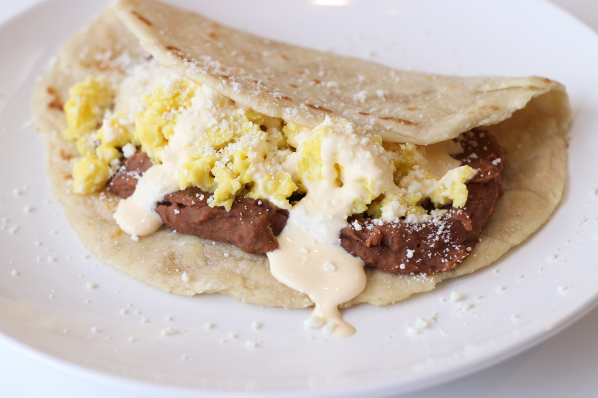

Baleadas

Ingredienten
- 2 beker flour
- 1 beker water
- 1/2 beker vegetarische olie
- 1 ei
- 1/2 theeleper zalt
- 2 beker bonen
- 1 avocado
- halve beker witte kaas
- 1/4 beker verse room
Bereidings
-
Maak de tortilla's: Meng bloem, water, plantaardige olie, ei en zout in
een grote kom. Kneed het deeg tot het glad is en niet meer plakkerig.
Vorm er acht ballen ter grootte van een golfbal van. Dek af en laat
ongeveer 20 minuten rusten.
- Rek elke bal deeg uit tot een dikke tortilla
-
Verhit een grote koekenpan op middelhoog vuur. Kook elke tortilla tot
hij bruin en licht gepoft is, ongeveer 1 minuut per kant.
-
Leg de gebakken bonen, avocado en queso-fresco op warme tortilla's en
besprenkel de crema erover. Vouw tortilla's dubbel om te eten.